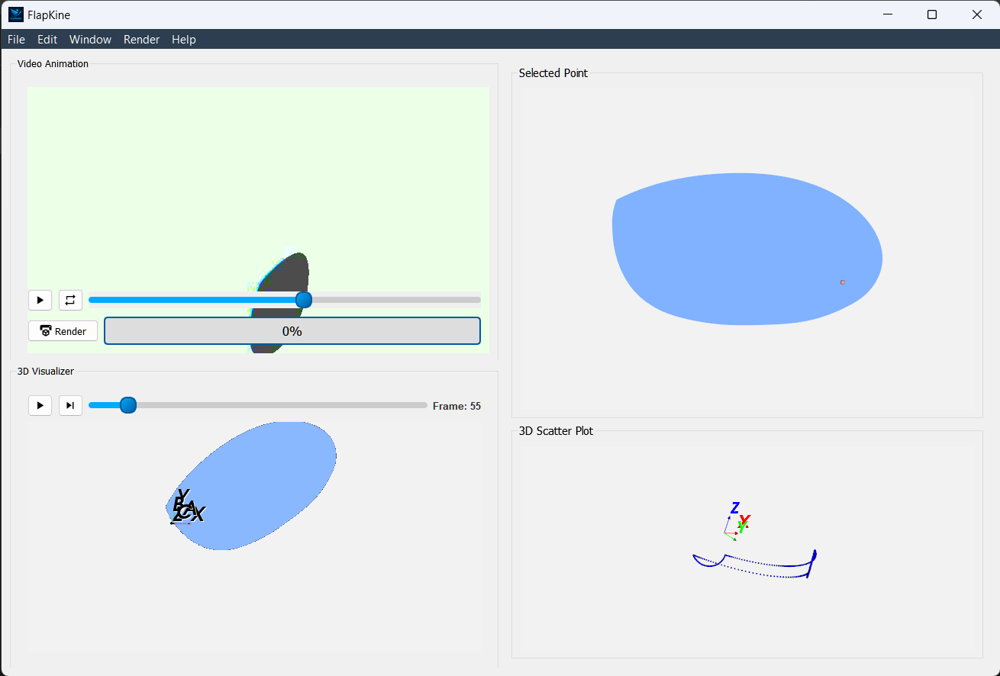

Project Editor Window#
{kind=link}

Overview#
The Project Editor serves as the heart of FlapKine, where users interact with STL scenes, fine-tune animations, and analyze motion data via integrated visualization tools.
—
Interface Overview#
Section |
Purpose |
|---|---|
Video Animation |
Renders and displays the animation preview |
3D Visualizer |
Plays the STL model animation interactively |
Selected Point |
Enables precise 2D point selection on STL model surfaces |
Scatter Plot |
Illustrates the 3D motion trajectory of the selected point |
—
Video Animation Widget#
Overview: Automatically shows the rendered animation if available. Otherwise, users can render the animation using the Render button.
Key Features:
Render Button: Initiates the animation render if it hasn’t been completed.
Status Bar: Displays real-time rendering progress beside the Render button.
Configurable Rendering: Adjust render settings via the Render → Configure Render in top menubar.
—
3D Visualizer Widget#
Overview: Renders the STL model in motion, providing an interactive 3D experience, which can be controlled using the mouse, with functions like rotation, zooming, and panning.
Key Features:
Interactive Controls: Rotate, zoom, and pan using the mouse.
Playback Controls: Play, pause, or scrub through the animation timeline.
Visualization Aid: Helps to set camera and lighting configurations for the final video render.
Coordinate Axes: Displays both body-fixed axes (A, B, C) and inertial axes (X, Y, Z).
—
Point Selector Widget#
Overview: Optimized for components like wings where one dimension is significantly smaller; it provides a 2D projection by excluding the smallest axis.
Key Features:
Flattened Projection: Automatically adjusts to produce a 2D view for easier point selection.
Adaptive Interface: Works intelligently for wing-like structures.
—
Scatter Plot Widget#
Overview: Uses computed forward kinematics to plot the 3D motion of the selected point with respect to the inertial coordinate system (X, Y, Z).
Key Features:
Trajectory Tracking: Visualizes the motion path in 3D space over time.
Inertial Axes Reference: The plot is aligned with the inertial axes (X, Y, Z), providing a global frame of reference for motion.